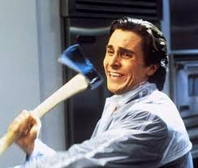

CV
BILOHRYSHCHENKO IHOR OLEKSANDROVYCH
07.08.1992

email: deadaftertheburial@gmail.com
phone number: 050 230 99 47
Profile in Linkedin
Work experience:
From April 2019 to August 2020, I worked at Autodoc as a Senior PPC-specialist
From August 2015 to March 2019, I worked in the office of Evgakids as a PPC-specialist, and from May 2019 to the present day I work remotely in the same position.
About myself:
Stress-resistant, non-conflict, straightforward, not talkative